Gestion des espaces de stockage avancée - LVM
Objectifs
- Comprendre le fonctionnement de LVM
- Préparer le stockage pour LVM
- Créer et modifier des groupes de volumes et volumes logiques
Créer des partitions en mode « moderne »
Présentation de LVM
### LVM : Logical Volume Manager**
- Le LVM permet de s’affranchir des limites physiques des périphériques. LVM implémente une couche logique pour une gestion plus souple et plus évolutive des volumes de stockage
- On gère plusieurs types d’éléments :
- Les volumes physiques (PV) : désignent les périphériques intégrés dans LVM
- Les groupes de volumes (VG) : permettent de regrouper les volumes physiques
-
Les volumes logiques (LV) : désignent les unités définies au sein des groupes de volumes
-
La création d’un ou plusieurs groupes de volumes sera faite à partir des volumes physiques (partitions) disponibles. Les groupes de volumes seront ensuite découpés en volumes logiques
- Ces volumes logiques pourront alors être utilisés comme n'importe quel volume de stockage
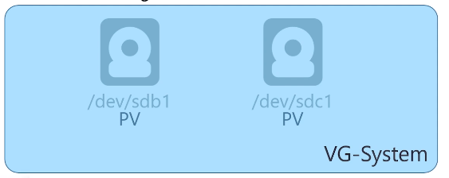
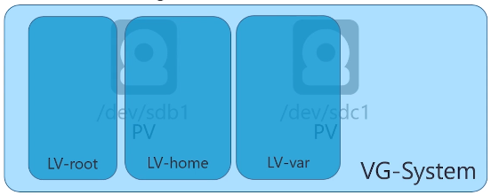

- Les commandes de gestion s'organisent autour de ces dénominations et respectent toujours la même logique. Pour la création, on aura par exemple :
pvcreate: création des volumes physiquesvgcreate: création des groupes de volumeslvcreate: création des volumes logiques- Il en sera de même pour toutes les autres directives :
display,extend,reduce,remove...
Créer des LVM
LVM : prérequis
Définir l'identifiant des partitions à utiliser avec fdisk, utiliser l'ID 8e – Linux LVM :
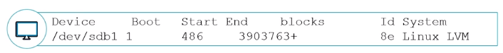
Créer des partitions LVM
Créer des volumes physiques :pvcreate
root@deb:~# pvcreate /dev/sdb1 /dev/sdb2 /dev/sdc1 /dev/sdd
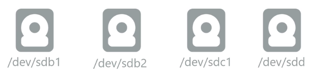
Créer des volumes groups :vgcreate
root@deb:~# vgcreate vggroup1 /dev/sdb1 /dev/sdb2 /dev/sdc1
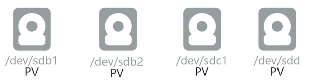 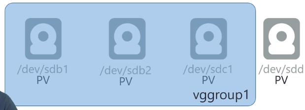
Créer des volumes logiques : lvcreate
root@deb:~# lvcreate -n lv1 -L 2G vggroup1 root@deb:~# lvcreate -n lv2 -L 512M vggroup1

Il y aura deux chemins possibles pour manipuler le Volume Logique
/dev/vgsystem/lvhome
Ou
/dev/mapper/vgsystem-lvhome
Modifier des LVM
Agrandir un Volume Group
Ajouter des volumes physiques au VG : vgextend
root@deb:~# vgextend vggroup1 /dev/sdd
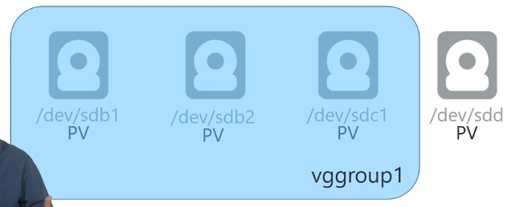 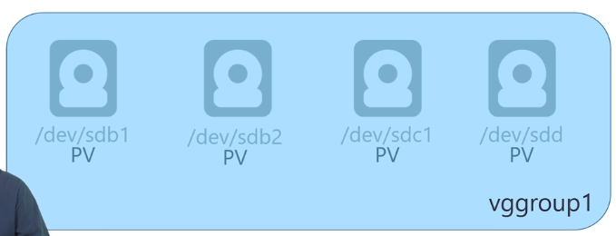
Créer des partitions LVM
Agrandir des volumes logiques : lvextend
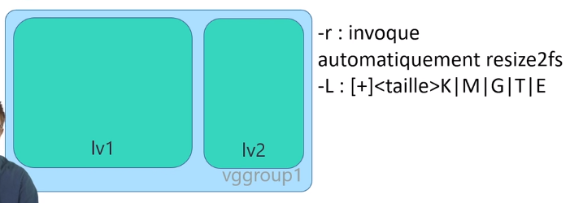
- De la même façon,
lvreducepermet de réduire la taille d'un volume logique - Attention, le système de fichier ne prendra pas en compte automatiquement ces changements. Il faudra forcer un redimensionnement pour pouvoir utiliser tout l'espace. > plus compliqué et dangereux > risque de destruction des données !
- La commande
resize2fsqui permet de redimensionner un système de fichier sera étudiée dans le module suivant
Afficher les informations LVM
- Plusieurs commandes sont disponibles pour obtenir des informations sur les volumes LVM configurés
- On peut les regrouper en deux « familles »
- Informations résumées avec « s » : pvs, vgs, lvs (s = summarize)
- Informations détaillées avec « display » : pvdisplay, vgdisplay, lvdisplay
Afficher les informations résumées sur tous les groupes de volumes :
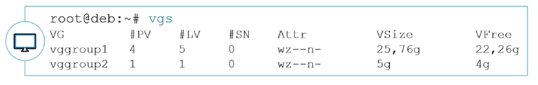
Afficher les informations détaillées sur tous les groupes de volumes :

Afficher les informations détaillées sur un groupe de volumes :
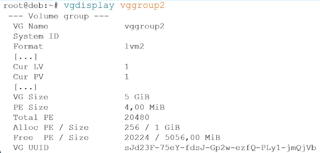
Afficher les informations résumées sur tous les Volumes Logiques :
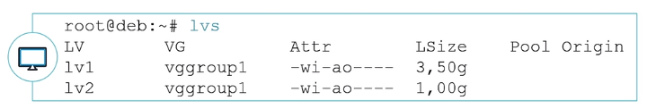
Afficher les informations détaillées sur tous les Volumes Logiques :

Afficher les informations détaillées sur un Volume Logique :

- Toutes les commandes LVM sont également disponibles dans un shell dédié, accessible avec la commande
lvm
Conclusion
- Vous savez préparer des disques et partitions pour LVM
- Vous savez créer et modifier des Volumes Groups
- Vous savez créer et modifier des Logical Volumes